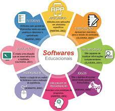

o que é um software?
Software é um conjunto de instruções que devem ser seguidas e executadas por um mecanismo, seja ele um computador ou um aparato eletromecânico. É o termo usado para descrever programas, apps, scripts, macros e instruções de código embarcado diretamente (firmware), de modo a ditar o que uma máquina deve fazer. Todo programa em seu computador, celular, tablet, smart TV, console de videogame, set-top box e etc. é um software, seja ele um editor de textos, um navegador, um editor de áudio ou vídeo, um jogo, um app de streaming e por aí vai. Um software pode se apresentar de várias formas, por isso se dividem em três categorias principais:
o que é um software?
Software é um conjunto de instruções que devem ser seguidas e executadas por um mecanismo, seja ele um computador ou um aparato eletromecânico. É o termo usado para descrever programas, apps, scripts, macros e instruções de código embarcado diretamente (firmware), de modo a ditar o que uma máquina deve fazer. Todo programa em seu computador, celular, tablet, smart TV, console de videogame, set-top box e etc. é um software, seja ele um editor de textos, um navegador, um editor de áudio ou vídeo, um jogo, um app de streaming e por aí vai. Um software pode se apresentar de várias formas, por isso se dividem em três categorias principais:
software de sistema
software de sistema
software de aplicação
software de progamação
são softwares que permitem que programadores criem outros programas, através do uso de linguagens de programação.
software de segurança
segurança de software é produzir software que não seja vulnerável a modificação não autorizada, tampouco deve possibilitar a um usuário, mal intencionado ou não, ter acesso a dados

software de bases de dados
Oracle Database. O Oracle Database – ou Oracle DB – é um sistema de gerenciamento de banco de dados relacional da Oracle. ... SQL Server. O SQL Server é o sistema de gerenciamento de banco de dados da Microsoft. ... MySQL. ... PostgreSQL. ... Firebird DB.
software de redes
Um software pode se apresentar de várias formas, por isso se dividem em três categorias principais: Software de programação. São as ferramentas usadas pelo programador para desenvolver novos softwares e programas. ... Software de sistema. ... Software de aplicação. 
software educacional
Software educativo de sistema tutorial; Software educativo de exercício e prática; Software educativo de simuladores e jogos e Software educativo de sistema experto.
software de entreterimento
Software aplicativo. São aplicações projetadas para resolver problemas específicos dos usuários. Software de programação. ... Software de sistema. ... Software livre. ... Software proprietário. ... S
ERP e CRM (Customer Relationship Management ou Gestão de Relacionamento com o Cliente).software de gestão empresarial
Design de Software (do inglês Software design) é a parte da engenharia de software que se encarrega de fazer todo o planejamento anterior ao desenvolvimento, incluindo a definição da arquitetura do software, e transformar tudo em um documento ou conjunto de documentos capazes de serem interpretados diretamente pelo ...
software de design assistido por computador (CAD)